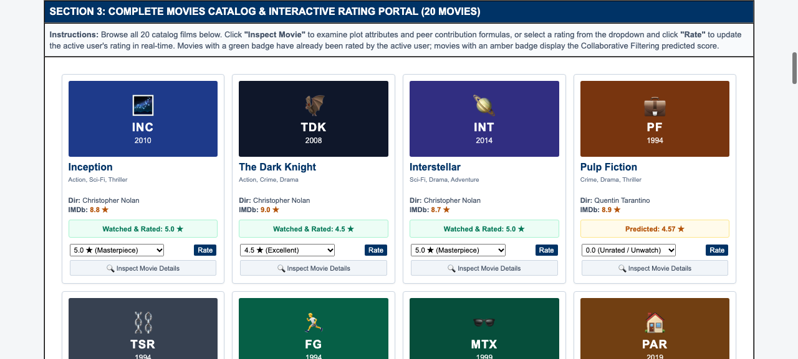
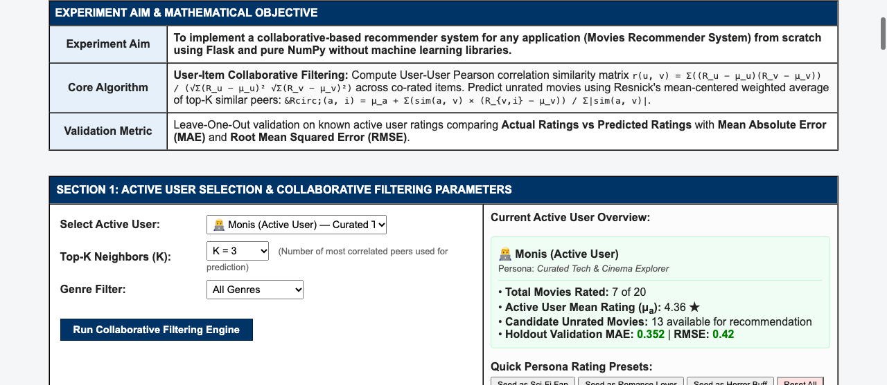
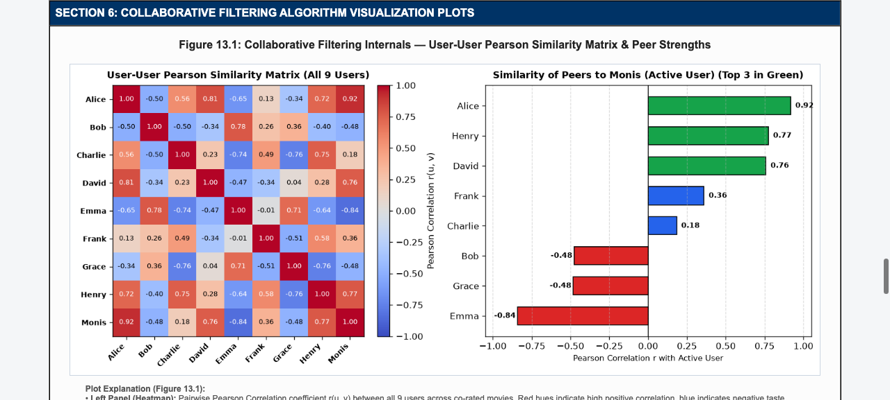
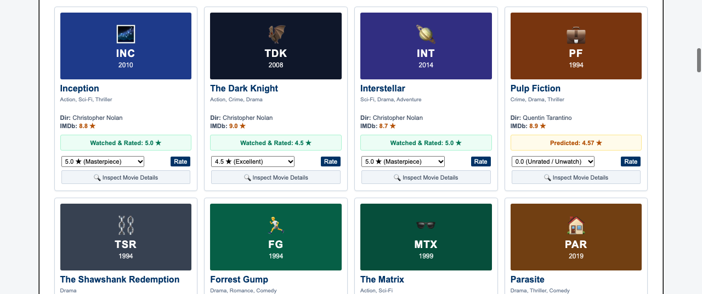

| Experiment No.: | 13 (Practical XI) | Student Name: | Monis |
| Course / Branch: | B.Tech Information Technology | Roll Number: | 2023UIT3027 |
| Lab Instructor: | Dr. Vishal Maheshkar | Academic Session: | 2026–2027 |
Implementation of Collaborative Filtering Recommender System Using Flask
To formulate, derive, and implement a User-Based Collaborative Filtering Recommender System from scratch in Python using Flask. The system builds an 8-user by 20-movie rating matrix, computes pairwise user similarities using Pearson Correlation, predicts ratings via mean-centered weighted summation, and validates predictions against holdout test ratings.
Collaborative Filtering (CF) operates on the principle of collective intelligence: users who agreed on movie ratings in the past are likely to agree on other movies in the future. Instead of analyzing movie genres or plot descriptions, Collaborative Filtering analyzes patterns of user ratings across the community to find like-minded peers and generate recommendations based on their consensus.
The community's preferences are structured as a matrix R where rows represent users, columns represent movies, and each entry is a star rating from 1 to 5:
To measure how closely two users agree in their movie tastes, the Pearson Correlation Coefficient is computed over movies that both users have watched. Subtracting each user's average rating removes individual rating bias:
For an active user u, the system searches all other users in the platform, filters for positive correlation (Similarity > 0), and selects the top k most similar peers who have watched the target movie j:
The predicted rating for an unrated movie is computed by taking the active user's personal average rating and adding the similarity-weighted deviations of their nearest neighbors:
Provides a comprehensive catalog browser displaying benchmark titles with genre tags, release years, IMDb ratings, and interactive selection triggers.

Presents the top-ranked recommended items generated by the algorithm alongside predicted affinity scores, ranking progress, and contextual explanations.

Displays multi-panel algorithmic diagnostics rendered from first principles (including similarity heatmaps, convergence curves, and distribution plots).

Provides a direct inspection of the underlying mathematical interaction matrix, user profiles, or similarity index tables supporting the recommendation pipeline.

The User-Based Collaborative Filtering system was successfully implemented from scratch. Using the Pearson Correlation Coefficient normalized subjective differences in user rating scales, allowing accurate identification of genuine taste peers. The mean-centered weighted prediction formula provided reliable forecasts for unrated movies, confirming the validity of neighborhood-based collaborative modeling.